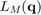

Model reference
Contents
Degrees of freedom
The generalized coordinates (degrees of freedom, DOF) of the model are:
1. SC_y 2. SC_z 3. SC_x 4. AC_y 5. AC_z 6. AC_x 7. GH_y 8. GH_z 9. GH_yy 10. EL_x 11. PS_y
Muscles
The muscle elements of the model are:
1. trapscap1 2. trapscap2 3. trapscap3 4. trapscap4 5. trapscap5 6. trapscap6 7. trapscap7 8. trapscap8 9. trapscap9 10. trapscap10 11. trapscap11 12. trapclav1 13. trapclav2 14. levscap1 15. levscap2 16. pectmin1 17. pectmin2 18. pectmin3 19. pectmin4 20. rhomboid1 21. rhomboid2 22. rhomboid3 23. rhomboid4 24. rhomboid5 25. serrant1 26. serrant2 27. serrant3 28. serrant4 29. serrant5 30. serrant6 31. serrant7 32. serrant8 33. serrant9 34. serrant10 35. serrant11 36. serrant12 37. deltscap1 38. deltscap2 39. deltscap3 40. deltscap4 41. deltscap5 42. deltscap6 43. deltscap7 44. deltscap8 45. deltscap9 46. deltscap10 47. deltscap11 48. deltclav1 49. deltclav2 50. deltclav3 51. deltclav4 52. coracobr1 53. coracobr2 54. coracobr3 55. infra1 56. infra2 57. infra3 58. infra4 59. infra5 60. infra6 61. termin1 62. termin2 63. termin3 64. termaj1 65. termaj2 66. termaj3 67. termaj4 68. supra1 69. supra2 70. supra3 71. supra4 72. subscap1 73. subscap2 74. subscap3 75. subscap4 76. subscap5 77. subscap6 78. subscap7 79. subscap8 80. subscap9 81. subscap10 82. subscap11 83. bicl 84. bicb1 85. bicb2 86. triclong1 87. triclong2 88. triclong3 89. triclong4 90. latdorsi1 91. latdorsi2 92. latdorsi3 93. latdorsi4 94. latdorsi5 95. latdorsi6 96. pectmajt1 97. pectmajt2 98. pectmajt3 99. pectmajt4 100. pectmajt5 101. pectmajt6 102. pectmajc1 103. pectmajc2 104. tricmed1 105. tricmed2 106. tricmed3 107. tricmed4 108. tricmed5 109. brachialis1 110. brachialis2 111. brachialis3 112. brachialis4 113. brachialis5 114. brachialis6 115. brachialis7 116. brachiorad1 117. brachiorad2 118. brachiorad3 119. pronteres1 120. pronteres2 121. supinator1 122. supinator2 123. supinator3 124. supinator4 125. supinator5 126. pronquad1 127. pronquad2 128. pronquad3 129. triclat1 130. triclat2 131. triclat3 132. triclat4 133. triclat5 134. anconeus1 135. anconeus2 136. anconeus3 137. anconeus4 138. anconeus5
Muscle-skeleton coupling
In the Opensim model, muscles are coupled to the skeleton by a muscle path model. The muscle path model consists of an origin point, an insertion point, and points or objects in between which ensure that the muscle wraps realistically around the bones. For the real-time simulator, we want to avoid using such a path model, for two reasons: (1) computation speed, and (2) differentiability.
Fortunately, we can achieve these goals and stay consistent with the Opensim model. We will represent the muscle-skeleton model by an analytical function  which produces the muscle-tendon length as a function of the joint angles. If this function is the same as what Opensim produces with its path model, the muscle is coupled to the skeleton in a way that is mechanically equivalent as far as the simulated movement is concerned.
For fast computation and differentiability, we choose a multivariate polynomial function:
The muscle path model is now fully encoded in a series of coefficients and exponents . The exponents and coefficients are formatted in the model struct as follows:
For example, muscle trapscap1:
model.muscles{1}.dof_indeces:
1
2
3
4
5
6
model.muscles{1}.lparams (e_ij):
0 0 0 0 0 0
2 1 0 0 0 0
1 2 1 0 0 0
0 0 0 3 0 1
0 0 0 0 1 0
1 0 0 0 0 0
0 2 0 0 0 0
0 0 0 0 1 1
1 0 0 1 1 1
0 2 1 0 0 0
0 0 0 1 0 0
0 0 1 3 0 0
model.muscles{1}.lcoefs (c_i):
0.2259
0.0607
0.1113
0.0063
-0.0050
0.1261
-0.2573
0.0998
0.0829
0.2236
-0.0036
0.0018
This muscle has 12 terms in its path polynomial.
There are 6 joint angles involved, so each term has 6 integer exponents e_ij and one coefficient c_i.
Next: Model testing
Previous: How to run the model
Home: Main